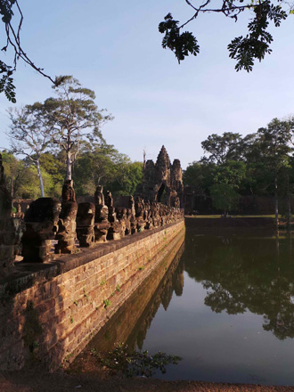
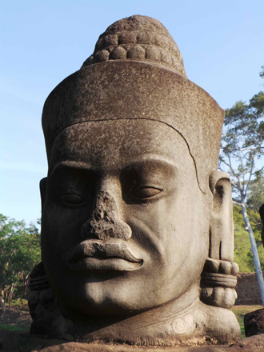
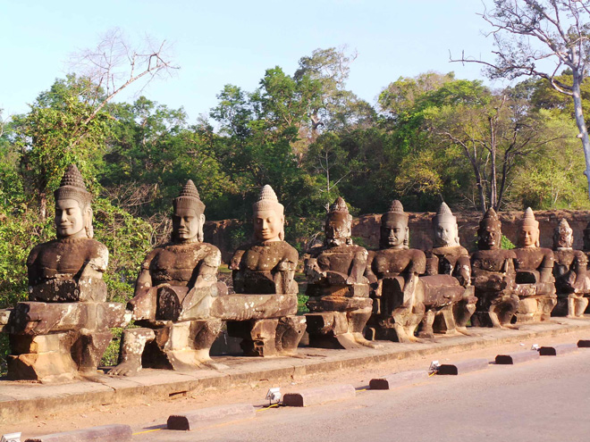
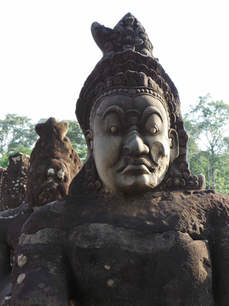
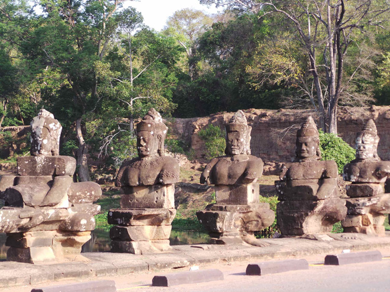
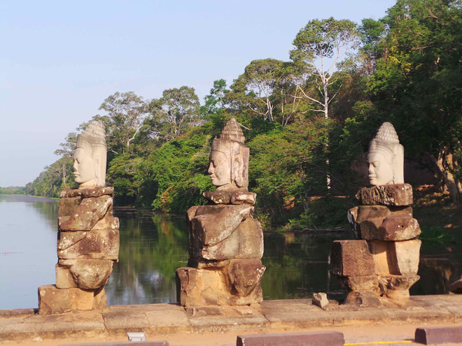
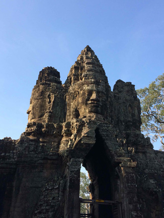

It is hard to imagine any building bigger or more beautiful than Angkor Wat but, at Angkor Thom, the sum of the parts adds up to a greater whole. It is the gates that get your attention first, flanked by a monumental representation of the 'Churning of the Ocean of Milk', 54 demons and 54 gods engaged in an epic tug-of-war on the causeway. Each of the gates towers above the visitor, the magnanimous faces of the Bodhisattva Avalokiteshvara staring out over the kingdom.






